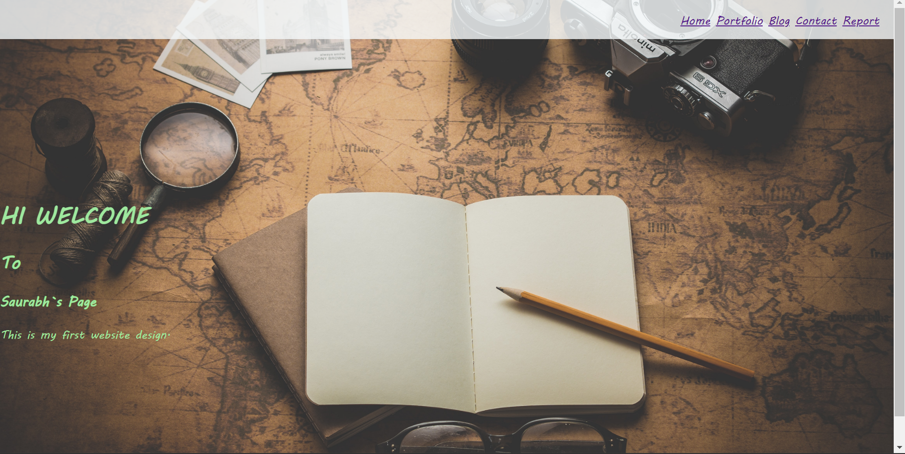
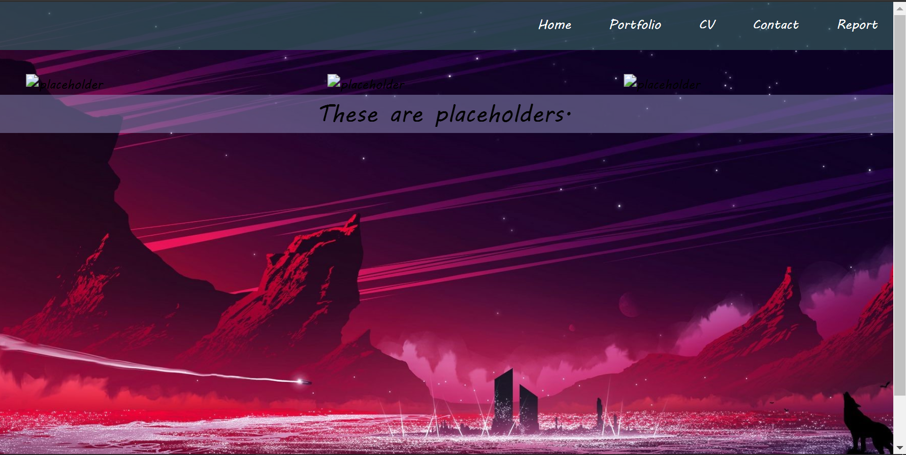
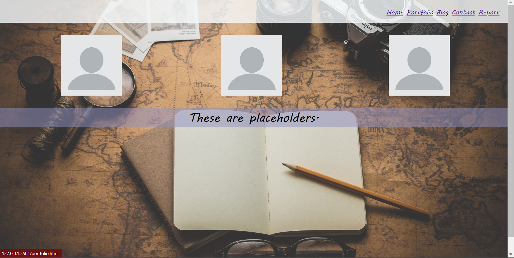
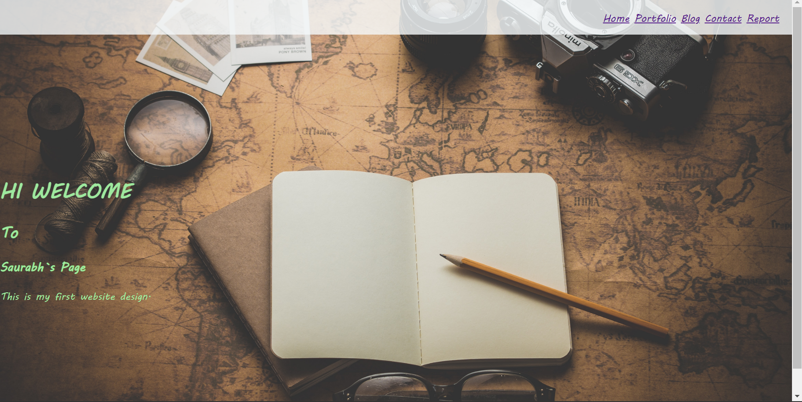
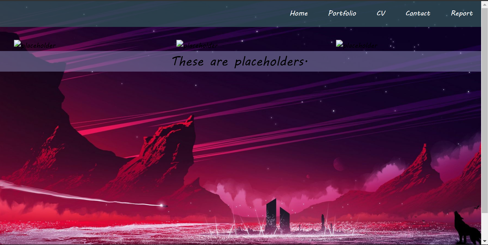
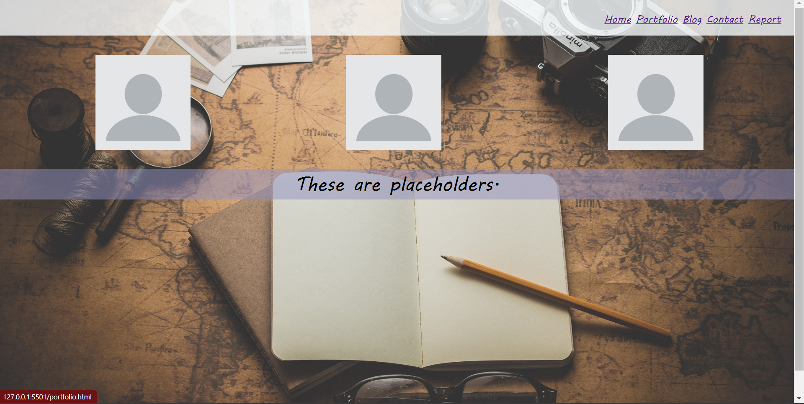
 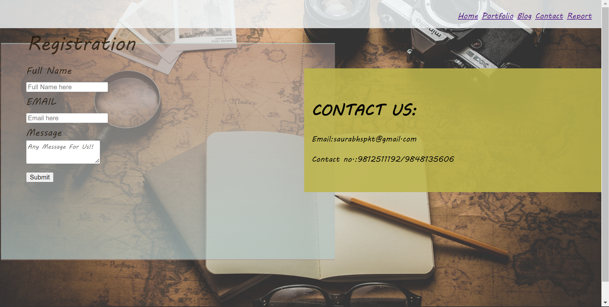
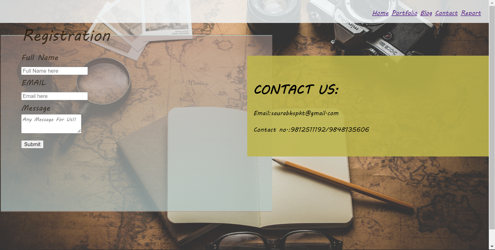
This is the assignment of CSY1018(Web Development). In this report page I am going to talk about changes and experience while doing this assignment. The assignment was to design a personal webpage. The webpage must 5 pages. i.e., Home, Portfolio, Blog, Contact and Report page. Use of the media queries should be done in the web design.
First, we received information about the assignment. Then there was discussion class for assignment brief where I was clear about the assignment. Then I started my assignment with the backend of the website. First, I created all the html pages and linked them with the CSS. I had some confusion on the blog page as I didn`t exactly know what to do on that page. So, I discussed it with my module leader, and he cleared my doubt about that page. After all the pages were created, I came up for the navigation bar. I took the idea for the navigation bar from the “Web dev” channel on the YouTube. I have linked the channel name below in the reference section.
After navigation bar I made couple of changes in the UI design and fonts on the website. I then started finding perfect image for the website. After completing that I worked on the responsive design for the website. Then I completed remaining part of the assignment like blog page and sitereport.
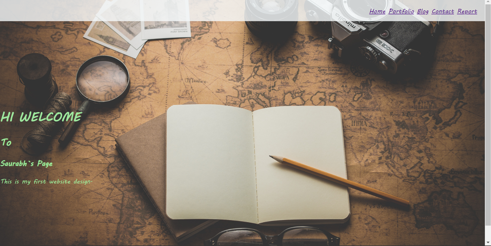
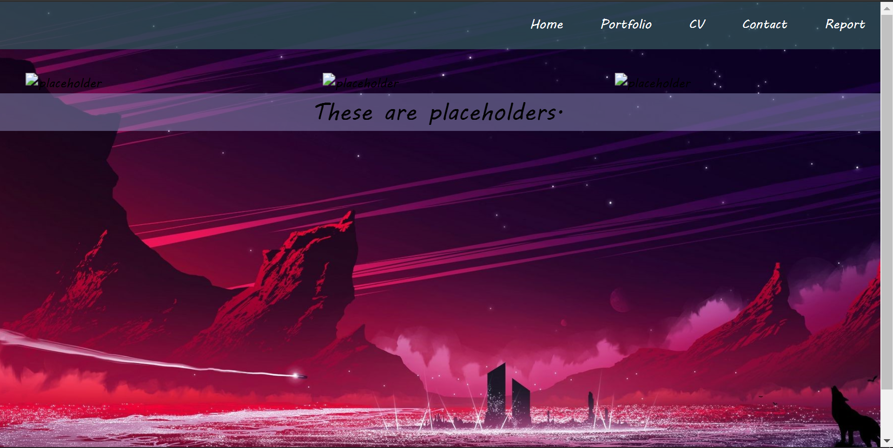
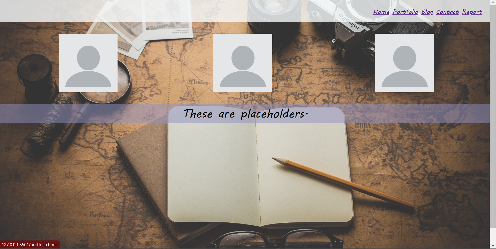
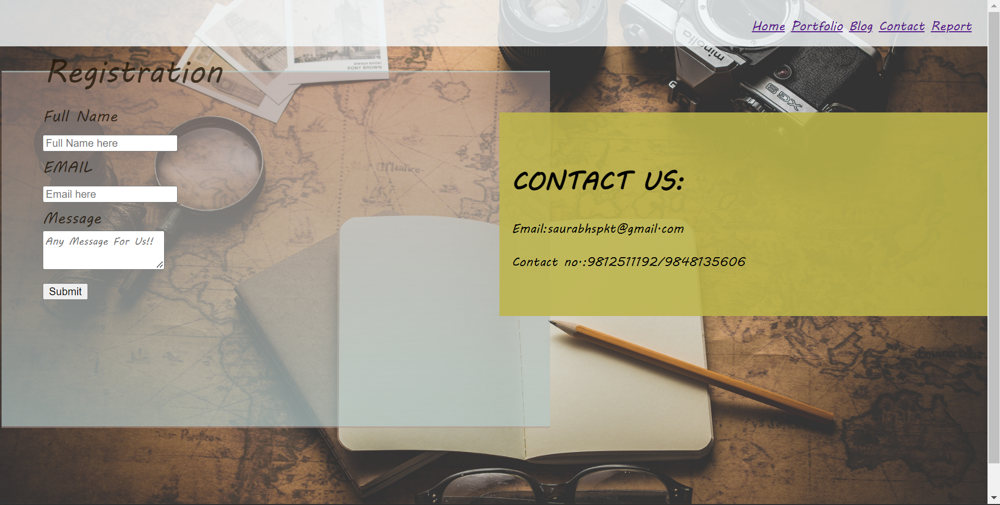
In home page, I just kept it simple with a background image and with normal texting ‘Hi, Welcome to Saurabh`s Page’, 'This is my first website design'. The change in home page was just with the background image, placing and color of the text. After that on portfolio, I replaced my background image and adjusted the placeholders in their suitable places. On the blog page I have changed the entries. I have explained all the process of my assignment into three phases. On the contact page I haven`t changed anything else except background image and place of Contact Us section. Talking of report page, I’m currently working on that.
Web-Development is most interesting module till now as it got a lot of practical things to do and learning new codes everyday makes learning joyful. We get to learn new codes every day in class. New ideas and discussion in classroom made my assignment easier for me. My experience doing this assignment was pretty amazing and interesting. I got to know a lot of different new codes, different ideas about designing the webpage. I also got to know new things about responsive and use of GitHub. At first, I was confused about the assignment as this type of assignment was totally new thing for me. Later our teacher guided us with the assignment. Along with teacher there were friends to help with the assignment.
In conclusion, I came up with different new ideas about web designing. I came to learn about many new codes which I missed in my class. This assignment was quiet interesting for me and helped boost my knowledge on Web-Development.
For background-image:
Unsplash[online]
Available from: "https://unsplash.com/photos/3OiYMgDKJ6k"
For navigation bar:
YouTube[online]
Available from: "https://www.youtube.com/watch?v=uyaV_EWWRmo&ab_channel=eHoweHowVerified"